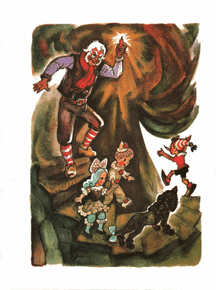

Sementara Karabas Barabas berguling-guling, seperti keedanan, menjambak-jambak jenggotnya sendiri, Buratino semakin di depan, diikuti Malavina, Pierrot, Artemon dan yang terakhir... Papa Carlo; meniti batuan anak tangga yang melingkar di bawah tanah.
Papa Carlo memegang sebatang lilin, kelap-kelip cahayanya membentangkan bayang-bayang lebar kepala Artemon yang gondrong, atau lengan Pierrot yang mengulur, tidak dapat menerangi gelapnya kemana tangga ini menurun.
Malavina, supaya dirinya tidak menjerit kaget, ia menyumbat telinganya rapat-rapat.
Pierrot, seperti biasa, tidak di kampung tidak di kota, dia bergumam membacakan puisi.
Bayangan menari-nari di dinding batu-
Tiada sama sekali menakutkanku.
Biarlah tangga ini mencuram
Biarpun gelap semakin suram,-
Kita tetap berjalan di bawah tanah
Mengantarkan kita, ke suatu arah...
Buratino berada jauh di depan kamerad-kameradnya, kupluk putihnya samar-samar terlihat di kedalaman sana.
Tiba-tiba di sana ada sesuatu yang mendesis, jatuh, berguling, lalu terdengar suara yang mengaduh:
- Kemarilah, tolong!
Seketika Artemon, melupakan rasa sakit dan laparnya, mendahului Malavina dan Pierrot, seperti angin puyuh hitam melesat menuruni tangga.
Gigi gemetar. Sesosok mahluk mencicit-cicit keji.
Semua begitu senyap. Hanya terdengar jantung Malavina berdegup-degup kencang, seperti jam weker.
Pancaran cahaya menerpa dari bawah tangga. Lilin kelap-kelip yang dipegang papa Carlo terlihat kuningnya
- Lihatlah, lihat sini cepat! /Buratino berteriak menggema/
Malavina; balik badan; tergesa-gesa merangkak mundur menuruni anak tangga ke anak tangga, diikuti Pierrot berjingkrak-jingkrak. Yang terakhir, sedikit membungkuk, Carlo berjinjit-jinjit, sendalnya dia lepas untuk berjaga-jaga.

Di bawah sana, di mana tangga curam itu berakhir, Artemon terduduk di ubin batu. Dia menjilat-jilat ngiler. Di dekat kakinya tergeletak seekor tikus yang terjepit; Susyara.
Buratino, dengan kedua tangannya menggeser kain kempa tua yang menjadi tirai sebuah portal di dinding batu. Dari sanalah cahaya kebiru-biruan itu memancar.
Hal pertama yang mereka lihat setelah memasuki portal itu: Pancaran cahaya matahari yang membias. memancar dari langit-langit berbentuk kubah menembus jendela bundar.
Pancaran lebar disertai butiran-butiran debu yang menari-nari di dalamnya, mengiluminasi ruangan bundar yang terbuat dari marmer kekuning-kuningan. Di tengah-tengahnya berdiri sebuah teater boneka yang indah nan menakjubkan, di permukaan tirainya berkilauan petir emas berbentuk zigzag.
Di kedua sisi tirai, menjulang sepasang menara persegi, yang dicat seolah mereka terbuat dari susunan batu bata kecil. Atapnya yang menjulang terbuat dari timah hijau, mengkilap berkilau.
Di menara yang kiri, terdapat sebuah jam dengan panah perunggu. Pada latarnya, menghadap setiap angka, tergambar wajah-wajah tawa anak laki-laki dan perempuan.
Di menara yang kanan, terdapat jendela bundar dengan kaca mozaik.
Di atas jendela itu, di atap timah hijau, hinggap si Jangkrik-Berbicara. Ketika semua orang berdiri dengan mulut menganga di hadapan teater yang menakjubkan, jangkrik itu berbicara dengan jelas dan perlahan:
- Aku sudah memperingatkan, bahwa bahaya mengerikan dan petualangan menakutkan menantimu, Buratino. Syukurlah semuanya berakhir dengan selamat, bisa saja semua berakhir dengan hal-hal yang tidak diharapkan... Begitulah...

Suara si jangkrik sudah menua dan sedikit tersinggung, karena si Jangkrik-Berbicara itu, sekali dalam hidup, kepalanya dilempari palu, meski umurnya sudah ratusan tahun dan juga baik hati, dia tidak bisa melupakan perlakuan yang tidak semena-mena. Oleh karena itu, dia tidak akan bincang-bincang lebih lama; dia menggerak-gerakan antenanya, dengan telaten membersihkan debu yang menempel, lalu perlahan dia merayap ke suatu tempat di dalam celah yang sepi; mengasingkan diri dari hiruk-pikuk keramaian.
Kemudian papa Carlo berkata:
- Tadinya, aku pikir.. di sini kita akan, setidaknya menemukan beberapa keping emas dan perak.. Ternyata hanya sekadar mainan-mainan usang.
Dia menghampiri jam yang terpasang di dinding menara lalu mengetuk-ngetukkan kuku jari pada latarnya. Di atas panah perunggu jam itu ada sebuah kunci kecil yang tertancap, dia pun mencabutnya, lalu jam itu mulai bergerak...
Terdengar bunyi tik-tok-tik-tok sangat nyaring; panah-panah itu bergerak. Anak panah yang besar menunjuk ke angka dua belas dan yang kecil ke angka enam. Di dalam menara itu terdengar suara gesekan dan getaran, jam itu berdentang enam kali...
Seketika di menara kanan, jendela bundar dari kaca mozaik itu terbuka, muncul keluar sebuah instrumen burung warna-warni, sayapnya mengepak-ngepak, berbunyi enam kali:
- Datang, datang, datang, datang, datang, datang
Burung itu masuk lagi, jendela menutup, berputarlah musik-musik organ. Kemudian tirai panggung naik terbuka...
Tidak seorang pun, bahkan papa Carlo pun, tidak ada yang pernah melihat penampilan seindah ini:
Di atas panggung itu ada sebuah taman. Di atas pohon-pohon kecil berdaun emas dan perak, berkicauan instrumen burung jalak seukuran kuku. Pada salah satu pohon bergelantungan buah-buah apel, masing-masing berukuran tidak lebih besar dari biji jagung. Di bawah pohon-pohon itu mondar-mandir burung-burung merak, lalu mereka berjinjit-jinjit mematuk apel. Di halaman rumput, dua ekor kambing melompat-lompat dan beradu, sehingga kupu-kupu berterbangan di udara, nyaris tidak terlihat oleh mata.
Satu menit pun berlalu. Burung jalak berhenti, burung-burung merak dan kambing-kambing undur diri, menyamping ke belakang tirai. Pohon-pohon berbaring ke pintu rahasia di kolong lantai panggung.
Di latar belakang panggung, mulai bertebaran awan-awan tulle.
Muncullah matahari merah di atas gurun pasir. Dari ujung kiri ke ujung kanan, dari balik tirai, tergerai tali-tali tambang liana, yang mirip seperti ular, pada salah satunya benar-benar tergantung seekor ular boa. Bergelantungan di tali-tali yang lain, keluarga monyet berayun-ayun, saling menangkap ekor satu sama lain.
Itu adalah Afrika!
Di atas gurun pasir di bawah matahari merah, berkeliaran hewan-hewan buas.
Pada tiga lompatan, mengaum seekor singa jantan, meskipun dia berukuran tidak lebih besar dari anak kucing, dia tetap menyeramkan.
Ada yang terhuyung-huyung berjalan dengan dua kaki belakangnya, beruang tedi memegang payung.
Merangkak-rangkak seekor buaya mengerikan, mata keranjangnya menatap manis. Tetap saja, Artemon tidak percaya dan menggeram padanya.
Menggeruduk seekor badak, demi keamanan, tanduknya yang runcing dipasangi bola karet.
Lewatlah seekor jerapah, dia itu ibarat unta, tapi belang-belang dan bertanduk, yang meregangkan lehernya sekuat tenaga.
Kemudian datang seekor gajah, sobatnya bocah-bocah, cerdas dan baik hati, belalainya melambai-lambai sambil membawa permen kacang.
Dan yang terakhir, berlari serong-serong menyamping, seekor anjing rimba dan dekil; Serigala. Artemon menggonggong melompat padanya, papa Carlo sekuat tenaga menahan ekor dia menjauh dari panggung.
Marga satwa sudah lewat. Matahari merah tiba-tiba lenyap. Di dalam kegelapan, benda-benda berjatuhan dari atas. Dan beberapa benda dilempar dari samping. Terdengarlah alunan suara, bagai busur menarik dawai.
Remang-remang lampu jalanan, di atas panggung tercipta sebuah wahana kota. Pintu-pintu rumah dibuka, muncul beramai-ramai manusia-manusia kecil, satu persatu naik ke gerbong mainan. Lonceng konduktor berdering, masinis menarik tuasnya, bocah-bocah itu merangkul bantalan sosis penuh semangat, sang kondektur bersiul, gerbong pun melaju di sepanjang jalan di antara bangunan-bangunan tinggi.
Lalu-lalang seorang pengendara sepeda yang rodanya berukuran tidak lebih besar dari tutup toples. Mondar-mandir seorang tukang koran, membawa empat lembar sobekan tanggal kalender yang dilipat-lipat, sebesar itulah korannya.
Tukang es krim mendorong-dorong roda es krimnya mengitari wahana, anak-anak gadis berlarian ke balkon rumah, mengulur-ulurkan tangan, tapi si tukang es melambai-lambai dan berkata:
- Sudah habis, datang lagi besok.
Tirai panggung pun turun menutup, petir emas berbentuk zigzag berkilauan.
papa Carlo, Malavina, dan Pierrot tidak sadar-sadar dari takjubnya. Buratino, dengan kedua tangan di sakunya, mengangkat batang hidungnya, dengan bangga dia berkata:
- Seperti yang kalian lihat? Ini berarti, tidak sia-sia aku basah kuyup di rawa tante Tortilla... Dengan teater ini kita akan mementaskan sebuah komedi, /para pembaca yang budiman tahu judulnya apa?/ "Kunci emas, atau petualangan luar biasa Buratino dan teman-temannya". Si Karabas Barabas akan 'kebakaran jenggot'.
Pierrot menggosok-gosok dahinya yang berkerut dengan tinjunya:
- Aku akan menulis naskah komedi tersebut dengan puisi-puisi terbaik.
- Saya yang akan menjual es krim dan tiketnya, /kata malavina/ jika menurut kalian saya berbakat, saya akan mencoba memainkan peran sebagai gadis cantik.
- Sebentar, anak-anak, lantas kapan kalian akan belajar? /papa Carlo bertanya/
Mereka menjawab serentak:
- Pagi-pagi belajar... sorenya bermain teater...
- Nah, begitu dong anak-anak, /papa Carlo berkata/ dan aku sendiri, wahai anak-anak sekalian, aku akan memutar organ untuk menghibur para pemirsa yang terhormat, dan jika nanti kita keliling Italia, dari kota ke kota, aku yang akan mengendarai kuda dan memasak sop kambing pakai bawang bombay...
Artemon mendengarkan dan mengamati, telinganya berdiri, kepalanya nengok, menatap teman-temannya dengan mata berbinar, seolah bertanya: "terus aku ngapain?"
Buratino berkata:
- Artemon akan mengelola alat-alat peraga dan kostum teatrikal, dia yang memegang kunci sanggar. Selama pementasan berlangsung, dia akan mengisi suara: geraman harimau, geruduk-geruduk badak, caplok-caplok gigi buaya, deru angin, /dengan memutar-mutar ekornya/ dan bunyi-bunyi lain yang diperlukan.
- Kau sendiri, kau sendiri ngapain, Buratino? /semua bertanya-tanya/ kau akan memainkan peran apa di teater?
- Dasar aneh, di dalam komedi itu aku akan memerankan diriku sendiri dan terkenal ke seluruh dunia!